Activity1
UMLActivity
Calculadora Project
::
Model
::
Calculadora
::
computarExpresion
::
Activity1
Description
none
Diagrams

computarExpresion
Nodes
InitialNode1
Obtener el primer operando de la expresión
Crear objeto de tipo Parseador
Obtener el segundo operando de la expresión
Optener el operador de la expresión
¿operador == +?
DecisionNode1
DecisionNode2
DecisionNode3
Sumar (operando1, operando2)
restar (operando1, operando2)
multiplicar (operando1, operando2)
dividir (operando1, operando2)
devolver reultado operación
ActivityFinalNode1
MergeNode1
Edges
(InitialNode1→Crear objeto de tipo Parseador)
(Crear objeto de tipo Parseador→Obtener el primer operando de la expresión)
(Obtener el primer operando de la expresión→Obtener el segundo operando de la expresión)
(Obtener el segundo operando de la expresión→Optener el operador de la expresión)
(Optener el operador de la expresión→¿operador == +?)
(¿operador == +?→DecisionNode1)
(DecisionNode1→DecisionNode2)
(DecisionNode2→DecisionNode3)
(Sumar (operando1, operando2)→MergeNode1)
(restar (operando1, operando2)→MergeNode1)
(multiplicar (operando1, operando2)→MergeNode1)
(dividir (operando1, operando2)→MergeNode1)
(MergeNode1→devolver reultado operación)
(¿operador == +?→Sumar (operando1, operando2))
(devolver reultado operación→ActivityFinalNode1)
(DecisionNode1→restar (operando1, operando2))
(DecisionNode2→multiplicar (operando1, operando2))
(DecisionNode3→dividir (operando1, operando2))
Properties
Name
Value
name
Activity1
stereotype
null
visibility
public
isReentrant
true
isReadOnly
false
isSingleExecution
false
Owned Elements
computarExpresion